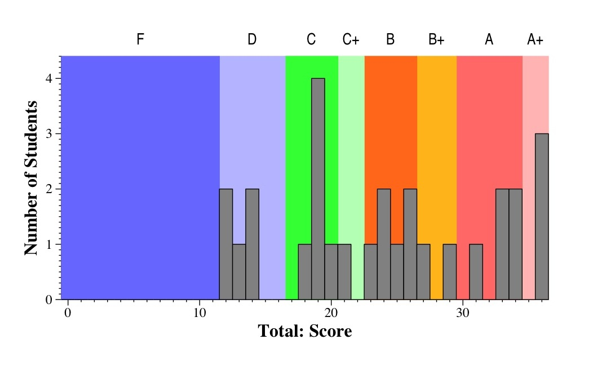

CS140 Midterm Exam -- October 11, 2005
Files
Grade Histograms

Histograms of all questions
Question Tukey Plots
(This is a Tukey Plot, which has lines to the max and min, yellow box denoting
the 1st and 3rd quartiles, hash marks at the median, and dot at the mean).
Comments
- A+: 35 and above
- A: 30 to 35
- B+: 27 to 30
- B: 23 to 27
- C+: 21 to 23
- C: 17 to 21
- D: 12 to 17
- F: Below 12